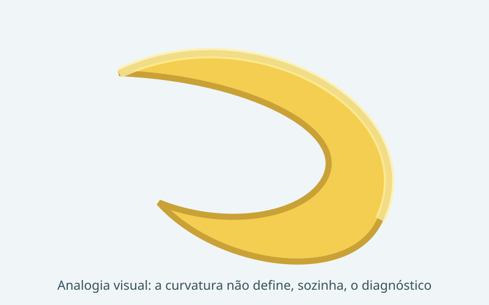
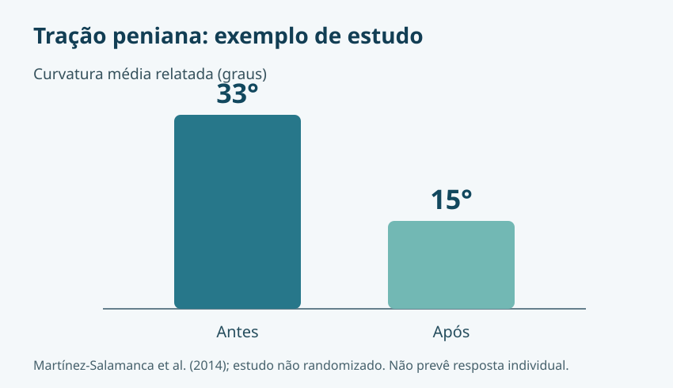
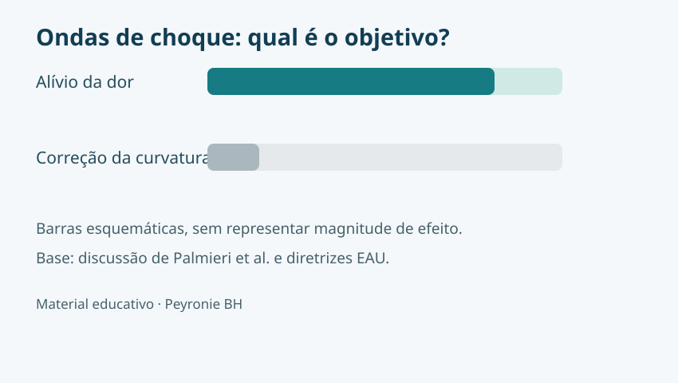

Curvatura não significa necessariamente doença

A doença de Peyronie pode causar curvatura adquirida, placa fibrosa, encurtamento, deformidade em ampulheta e dor. A comparação visual ajuda a iniciar a conversa, mas o formato da curvatura não determina sua causa ou gravidade.
Como confirmar o diagnóstico?
A história clínica e o exame físico são fundamentais. O especialista avalia quando a curvatura surgiu, se mudou, se há dor, placa palpável, dificuldade sexual e alterações de rigidez. Fotografias padronizadas da ereção podem ajudar a documentar a deformidade.
O ultrassom Doppler peniano com ereção farmacologicamente induzida pode ser útil em casos selecionados, especialmente no planejamento terapêutico e na avaliação vascular quando existe disfunção erétil associada. Na aula “US Doppler de pênis com fármaco-indução”, o Dr. Walter Moreira Fonseca destaca a indicação em doença de Peyronie e a importância de correlacionar resultados à qualidade da ereção durante o exame. Não é obrigatório para todos os pacientes.
Tratar cedo muda o desfecho?
Reconhecer a doença na fase ativa permite acompanhar progressão, controlar dor, orientar expectativas e discutir opções conservadoras. Isso não significa que qualquer intervenção precoce previna cirurgia. A aula “Doença de Peyronie: Tratar Cedo Muda o Desfecho?” enfatiza acolhimento e decisões individualizadas, sem promessas irreais.
Tração peniana: o que os estudos mostram?

Dispositivos de tração podem ser considerados em pacientes selecionados. A magnitude de benefício varia conforme o dispositivo, o protocolo e a adesão. Estudos mais antigos envolveram uso diário prolongado; dispositivos modernos podem ter regimes diferentes.
Ondas de choque: dor não é curvatura

As ondas de choque extracorpóreas podem ser discutidas para alívio de dor em situações específicas. Não devem ser anunciadas como método comprovado para endireitar o pênis ou reduzir a placa.
E quando a cirurgia é indicada?
Em doença estável com deformidade funcionalmente importante, a avaliação pode incluir plicatura, incisão de placa com enxerto ou prótese peniana em pacientes com disfunção erétil refratária. A escolha depende da função erétil, da anatomia e das prioridades do paciente.
Fontes e leituras
Conteúdo elaborado a partir das apresentações do Dr. Walter Moreira Fonseca “Doença de Peyronie: Tratar Cedo Muda o Desfecho?” (XVI Congresso Norte Nordeste de Urologia, páginas 4–16) e “US Doppler de pênis com fármaco-indução” (III Jornada Mineira de Andrologia, páginas 6–7 e 27), além dos trabalhos científicos ali citados.
- Martínez-Salamanca JI et al. Acute phase Peyronie's disease management with traction device. J Sex Med. 2014;11:506–515.
- Palmieri A et al. Extracorporeal shock wave therapy for Peyronie's disease. Eur Urol. 2009;56:363.
- EAU Guidelines on Sexual and Reproductive Health.